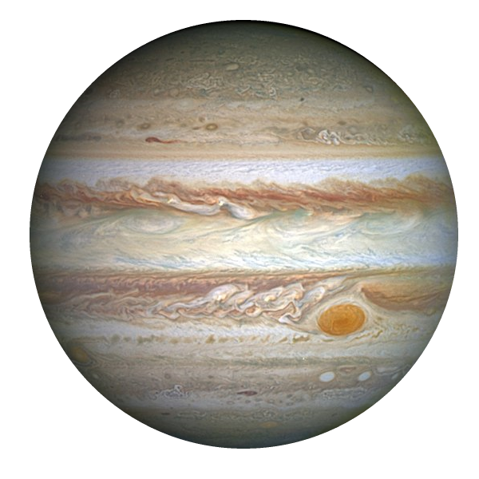

Прошло почти три года с момента появления одного из наиболее интересных предположений...
Представление художника о Девятой планете, как о ледяном гиганте, затмевающем центр Млечного пути, с изображённой на фоне солнцеподобной звездой. Орбита Нептуна показана как небольшой эллипс вокруг Солнца. Прошло почти три года с момента появления одного из наиболее интересных предположений, касающихся нашего собственного космического двора: что далеко за пределами орбиты Нептуна в нашей Солнечной системе может существовать ещё одна планета, ещё более массивная, чем Земля.
В отличие от крохотных миров, обнаруженных ранее в поясе Койпера, типа Плутона или Эриды, это может быть мир больше Земли, с массой, вероятно, в десять раз превышающей земную, и отвечающий за придание видимым нам объектам странных орбит. Как предположили Константин Батыгин и Майкл Браун, в пользу её существования должны говорить дополнительные доказательства, некоторые из которых начали проявляться. Однако большая часть учёных не согласна с этими доказательствами.
Они утверждают, что эти данные предвзяты. И если учесть это, то никакая Девятая планета уже не нужна. Что самое важное, их открытия соответствовали тому, что Девятой планеты нет, и что доводы за её существование были ослаблены их исследованием. В частности, скопления ориентаций орбит в космосе (определяемое многими переменными), замеченное в ранних исследованиях, например Батыгина с Брауном
Шансы на случайное совпадение примерно равны 0,0001%
Пояс Койпера служит домом крупнейшему скоплению удалённых объектов из всех обнаруженных нами. При их изучении можно было бы ожидать случайной ориентации их орбит, наклон и точки минимального приближения должны быть одинаково распределены во всех направлениях. Однако орбиты наиболее далёких объектов, согласно имеющимся наблюдениям, сдвинуты в одном определённом направлении, и наклонены в одном направлении. Если бы так вели себя один-два объекта, это можно было бы списать на случай, но у нас таких объектов шесть; шансы на случайное совпадение примерно равны 0,0001%. Астрономы Константин Батыгин и Майкл Браун предложили новую радикальную теорию: существование сверхудалённой девятой планеты, массивнее Земли, но легче Урана и Нептуна, которая выбрасывает эти объекты на их новые орбиты.
«Дыма без огня не бывает»
Что самое важное, их открытия соответствовали тому, что Девятой планеты нет, и что доводы за её существование были ослаблены их исследованием. В частности, скопления ориентаций орбит в космосе (определяемое многими переменными), замеченное в ранних исследованиях, например Батыгина с Брауном и Трухильо с Шепардом, просто не существует в этом новом, непредвзятом исследовании. В выборке OSSOS мы не обнаружили никаких свидетельств для скопления, бывшего основой гипотезы наличия дополнительной планеты. Авторы этого исследования от 2017 года предполагают, что предыдущее исследование склонялось в пользу существования такого мира из-за предвзятости наблюдения.
Однако тщательное определение предвзятости, обнаруженной в исследовании OSSOS, поясняет, откуда взялись эти корреляции и почему их не видно в новых данных: Мы предполагаем, что это скопление явилось результатом комбинации предвзятости наблюдения и статистики по небольшой выборке, хотя мы не можем проверить это без публикации характеристик наблюдений, обнаруживших эти ТНО.
Конечно, этого исследования недостаточно для опровержения гипотезы Девятой планеты; она всё равно может существовать. В качестве контраргумента Майкл Браун предположил, что иная стратегия наблюдений может стать определяющий, а OSSOS просто был не очень подходящим наблюдением для поиска Девятой планеты. Однако, как гласит пословица, «дыма без огня не бывает», то есть у наблюдаемого эффекта должна быть какая-то причина.
Космос
Почему учёные считают, что Девятой планеты не существует